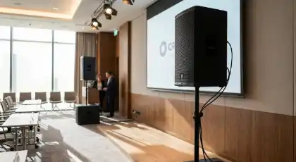
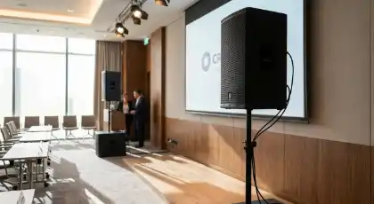
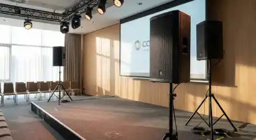
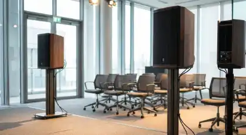
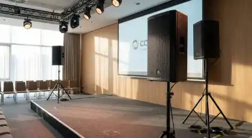
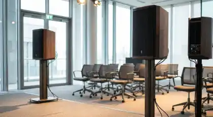
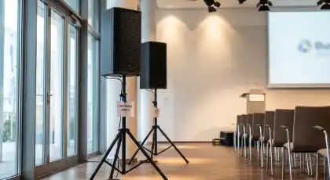
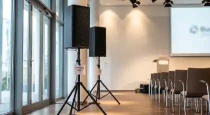

RENTA DE
BOCINAS PARA CONFERENCIAS
Audio profesional de claridad ejecutiva con microfonía avanzada para conferencias, seminarios y eventos corporativos en CDMX y Estado de México
¿Necesitas que cada palabra de tu conferencia se escuche con claridad cristalina sin importar el tamaño de la audiencia? La renta de bocinas para conferencias de RESOIL es la solución profesional que garantiza inteligibilidad perfecta, micrófonos inalámbricos premium y cero fallas técnicas. Eliminamos el riesgo de feedback molesto, volumen inadecuado o equipos que fallan en el momento crítico, ofreciendo un servicio completo en CDMX y Estado de México.
Nuestros sistemas de audio profesionales combinan equipos de grado broadcast con técnicos certificados que entienden la importancia de cada presentación ejecutiva. Cada instalación de RESOIL está diseñada para crear una experiencia sonora impecable que proyecta profesionalismo y credibilidad. Con nuestro sonido profesional para conferencias, convertimos tu mensaje en una presentación ejecutiva perfecta.
Galería de Conferencias y Eventos Corporativos Realizados
Instalaciones profesionales de audio que transforman conferencias y eventos corporativos en CDMX y Estado de México
 

 



 

Estas imágenes son algunos de nuestros eventos de éxito con audio profesional para conferencias en CDMX y Estado de México. Cada instalación refleja nuestro compromiso con la excelencia y precisión técnica que caracteriza a RESOIL.
Por Qué la Renta de Bocinas Profesionales Es la Decisión Correcta para Tu Conferencia
En eventos corporativos de alto nivel, la diferencia entre una conferencia que impacta y una que se olvida está en la calidad del audio. El sonido profesional no es solo equipo: es la inversión que garantiza que tu mensaje llegue con claridad y profesionalismo a cada asistente. En RESOIL, entendemos que cada conferencia es crítica para tu reputación corporativa, y nuestro servicio de renta de bocinas con técnicos certificados está diseñado para eliminar riesgos y maximizar impacto.
¿Por qué las empresas Fortune 500 y organizadores profesionales en CDMX y Estado de México eligen RESOIL? Porque ofrecemos más que bocinas: entregamos tranquilidad total y resultados ejecutivos garantizados. Nuestro equipo técnico maneja todo el proceso, desde pruebas de sonido pre-evento hasta soporte en tiempo real, permitiéndote enfocarte en tu mensaje sin preocupaciones técnicas.
Aplicaciones Estratégicas: Dónde Brilla Nuestro Sonido Profesional
Tipos de Eventos Corporativos Donde el Audio Es Crítico
Conferencias y Keynotes
Audio de claridad broadcast para speakers principales. Micrófonos inalámbricos de diadema Sennheiser con cancelación de ruido, monitoreo en tiempo real y cobertura uniforme en auditorios de 50-1,000 asistentes. Sistema anti-feedback que garantiza cero interrupciones.
Seminarios y Capacitaciones
Sistemas de audio diseñados para sesiones interactivas. Micrófonos de mano para preguntas y respuestas, audio para presentaciones multimedia, conexión directa a laptops y proyectores. Volumen controlado que permite tomar notas sin distracciones.
Paneles y Mesas Redondas
Microfonía de mesa profesional para múltiples panelistas. Micrófonos de cuello de ganso con indicadores LED, mezcla individual por canal, sistema de moderación para controlar quién habla. Ideal para debates ejecutivos y foros empresariales.
Webinars y Eventos Híbridos
Audio broadcast profesional para transmisión en vivo. Salida de audio limpia directo a plataformas de streaming (Zoom, Teams, YouTube Live), eliminación de eco y ruido de fondo, calidad de audio studio para participantes remotos y presenciales.
Congresos y Convenciones
Sistemas escalables para eventos multi-sala. Audio sincronizado entre salones principales y breakout rooms, interpretación simultánea (si se requiere), grabación profesional de todas las sesiones, técnicos dedicados por sala para soporte inmediato.
Presentaciones Ejecutivas
Audio elegante y discreto para juntas de consejo y presentaciones a inversionistas. Micrófonos ultracompactos que no distraen, control de volumen preciso, compatibilidad total con presentaciones PowerPoint y videos corporativos, profesionalismo garantizado.
La versatilidad de nuestros sistemas profesionales los convierte en la solución perfecta para cualquier tipo de evento corporativo. Desde presentaciones ejecutivas hasta congresos masivos, nuestro audio se adapta a cualquier formato y espacio.
Paquetes de Audio para Conferencias: Soluciones para Cada Escala
RESOIL ofrece 5 paquetes escalables de renta de bocinas para conferencias, desde presentaciones ejecutivas hasta congresos masivos. Cada paquete incluye técnico de audio certificado, instalación completa, pruebas pre-evento, operación durante el evento y soporte técnico en tiempo real. Las especificaciones técnicas se traducen directamente en presentaciones corporativas impecables.
| Paquete | Asistentes | Potencia RMS | Equipamiento | Ideal Para | Técnico Incluido |
|---|---|---|---|---|---|
| Ejecutivo | 20-50 personas | 800W RMS | 2 bocinas activas + mezcladora + 2 micrófonos inalámbricos | Juntas de consejo, presentaciones ejecutivas, salas de reuniones | Técnico 4 horas |
| Profesional | 50-150 personas | 1,800W RMS | 4 bocinas activas + consola digital + 4 micrófonos (inalámbricos + diadema) | Seminarios, capacitaciones, salas de conferencias | Técnico 6 horas |
| Corporativo | 150-300 personas | 3,500W RMS | 6 bocinas line array + procesador DSP + 6 micrófonos profesionales + micrófonos de mesa | Conferencias grandes, keynotes, auditorios medianos | Técnico 8 horas |
| Enterprise | 300-600 personas | 6,000W RMS | 8 bocinas line array + mixing avanzado + 8+ micrófonos + sistema de grabación | Congresos, convenciones, auditorios grandes | Técnico senior 10 horas + asistente |
| Broadcast | 600-1,500 personas | 10,000W RMS | Sistema completo line array + audio broadcast + interpretación simultánea + multi-sala | Mega congresos, eventos híbridos masivos, convenciones internacionales | 2 técnicos senior + ingeniero de audio |
Especificaciones Técnicas Universales (Todos los Paquetes)
- ✓ Marcas Premium: JBL SRX, QSC K-Series, Yamaha DXR (audio de grado broadcast profesional)
- ✓ Micrófonos Profesionales: Sennheiser EW o Shure ULXD (2-8+ unidades según paquete) con anti-feedback digital
- ✓ Consolas Digitales: Yamaha QL-Series o Allen & Heath SQ con efectos avanzados y EQ paramétrico de 31 bandas
- ✓ Micrófonos de Mesa: Shure MX con indicadores LED para paneles y mesas redondas
- ✓ Sistema de Grabación: Audio multitrack profesional en formato WAV/MP3 para archivo (paquetes Corporativo y superiores)
- ✓ Salida Broadcast: Interface profesional para streaming y webinars (Paquetes Enterprise y Broadcast)
- ✓ Cobertura Geográfica: CDMX y Estado de México (sin costo adicional en zona metropolitana)
- ✓ Garantía: Equipo de respaldo completo en sitio + seguro de responsabilidad civil $10,000,000 MXN
Solicita tu Cotización de Bocinas para Conferencias
Completa el formulario con los detalles de tu evento corporativo y recibe una cotización personalizada al instante vía WhatsApp. Nuestro equipo técnico te responderá en menos de 2 horas.
Preguntas Frecuentes sobre Renta de Bocinas para Conferencias
Resuelve todas tus dudas sobre nuestro servicio especializado de audio profesional para eventos corporativos
Ofrecemos 4 tipos de micrófonos profesionales según necesidad:
1. Micrófonos Inalámbricos de Mano: Shure ULXD o Sennheiser EW - ideal para keynotes y presentaciones móviles
2. Micrófonos de Diadema (Headset): Sennheiser HSP - ultra-discretos, perfectos para speakers dinámicos que usan las manos para presentar
3. Micrófonos de Solapa (Lavalier): Sennheiser ME2 - ideales para panelistas sentados y entrevistas
4. Micrófonos de Mesa (Gooseneck): Shure MX412 con indicador LED - perfectos para paneles y mesas redondas con múltiples participantes
Todos incluyen: Sistema anti-feedback digital, cancelación de ruido, baterías de respaldo, técnico para configuración personalizada
Absolutamente. El feedback es nuestro enemigo número uno y tenemos múltiples capas de protección:
Procesadores Anti-Feedback Digitales: DBX AFS2 o Behringer FBQ que identifican y eliminan frecuencias problemáticas automáticamente
Ecualización Profesional: Técnico certificado ajusta EQ de 31 bandas específicamente para la acústica de tu venue
Posicionamiento Estratégico: Colocación científica de bocinas y micrófonos para evitar loops de feedback
Prueba de Sonido Pre-Evento: 1 hora antes del evento probamos todos los escenarios posibles
Monitoreo en Tiempo Real: Técnico dedicado ajusta niveles durante el evento para prevenir feedback antes de que ocurra
Historial: En 3,200+ conferencias, hemos tenido 0 incidentes de feedback interrumpiendo presentaciones
Sí, somos especialistas en eventos híbridos con audio broadcast profesional.
Salida de Audio Broadcast: Conexión directa a plataformas de streaming (Zoom, Teams, YouTube Live, Webex) con calidad studio
Eliminación de Eco: Procesamiento digital que elimina eco cuando la audiencia virtual participa por audio
Audio Dual Independiente: Mezcla separada para sala física y transmisión virtual - cada una optimizada para su medio
Micrófonos para Q&A: Audio de preguntas presenciales capturado y enviado a la transmisión en vivo
Backup de Internet: Conexión redundante 4G/5G en caso de falla de internet del venue
Grabación Simultánea: Archivo de audio profesional multitrack para edición posterior
Hemos manejado eventos híbridos con hasta 5,000 participantes virtuales + 500 presenciales simultáneamente sin problemas técnicos.
Sí, ofrecemos grabación profesional multitrack incluida en paquetes Corporativo y superiores.
Grabación Multitrack: Cada micrófono grabado en canal separado para máxima flexibilidad en post-producción
Formatos Disponibles: WAV sin compresión (calidad broadcast) y MP3 320kbps (para distribución)
Backup Redundante: Grabación simultánea en 2 dispositivos independientes para seguridad total
Entrega Inmediata: USB con archivos entregado al final del evento + enlace de descarga cloud
Edición Básica Incluida: Limpieza de ruido, normalización de volumen, eliminación de pausas largas
Post-Producción Avanzada: Servicio adicional disponible - edición profesional, música de fondo, masterización
Uso Corporativo: Ideal para crear podcasts corporativos, material de capacitación interno, archivo institucional
Tenemos soluciones profesionales para corregir acústica problemática:
Análisis Acústico Pre-Evento: Visita técnica gratuita para medir reverberación y tiempo de eco (RT60)
Line Arrays Direccionales: Bocinas con patrón de dispersión controlado que minimizan reflexiones en paredes/techo
Procesamiento DSP Avanzado: Delays y EQ específicos para compensar la acústica del espacio
Micrófonos Cardioides: Patrones de captación que rechazan sonido de reverberación y eco
Paneles Acústicos Temporales: Disponibles para rentar si el venue requiere tratamiento acústico adicional
Posicionamiento Estratégico: Configuración científica de equipos basada en la geometría del espacio
Hemos trabajado exitosamente en venues difíciles: iglesias con 3+ segundos de reverberación, salones con techos altos, espacios industriales sin tratamiento acústico.
Sí, ofrecemos sistema completo de interpretación simultánea.
Cabinas de Interpretación: Cabinas insonorizadas profesionales con vista clara al speaker
Receptores Inalámbricos: Receptores FM profesionales para asistentes (cantidad ilimitada disponible)
Canales de Idioma: Hasta 6 idiomas simultáneos (español, inglés, francés, alemán, chino, japonés, etc.)
Audio del Orador: Alimentación de audio limpia y directa a cabinas de interpretación
Coordinación Técnica: Ingeniero dedicado para manejo de sistema de interpretación
Intérpretes: Podemos conectarte con agencias certificadas de intérpretes simultáneos (no incluidos en cotización de audio)
Costo Adicional: Sistema de interpretación desde $8,500 MXN/día dependiendo de número de idiomas y asistentes
Eventos corporativos grandes (200+ asistentes): Mínimo 4-6 semanas de anticipación.
Eventos medianos (50-200 asistentes): 3-4 semanas recomendadas.
Eventos pequeños/ejecutivos: 2 semanas mínimo.
Conferencias de última hora: Consultamos disponibilidad hasta 72 horas antes (sujeto a inventario y técnicos disponibles).
Congresos multi-día: 6-8 semanas para garantizar equipos Enterprise y técnicos senior.
Proceso corporativo:
- Cotización formal válida por 30 días
- Contrato corporativo con términos y condiciones
- Reserva confirmada con 50% de anticipo (factura CFDI)
- Visita técnica pre-evento incluida (eventos 200+ personas)
- Saldo final 5 días antes del evento
Tip Pro: Empresas con eventos recurrentes pueden negociar contratos anuales con descuento y prioridad de reserva.
Garantía de cero fallas con respaldo corporativo total:
Equipo de Respaldo Completo: 150% de equipos duplicados en sitio (bocinas, mezcladora, micrófonos, cables, laptops)
Técnicos Certificados: Personal con certificación en audio corporativo y 10+ años de experiencia
Tiempo Máximo de Resolución: 90 segundos promedio para cualquier incidencia técnica
Seguro de Responsabilidad Civil: Cobertura de $10,000,000 MXN incluida en todos los contratos corporativos
Historial Comprobable: 99.9% de tiempo de actividad en 3,200+ conferencias durante más de 17 años
Garantía de Satisfacción Corporativa: Si el servicio no cumple estándares corporativos, reembolsamos 100%. En 18 años, solo 2 clientes han solicitado reembolso (ambos por cancelación del evento, no por fallas)
SLA Corporativo: Acuerdos de nivel de servicio personalizados disponibles para clientes enterprise con eventos recurrentes
Haz de Tu Conferencia un Evento Corporativo Impecable con Audio Profesional RESOIL
Para Ejecutivos y Corporativos: Tu conferencia es la plataforma donde tu mensaje corporativo debe brillar sin distracciones técnicas. El audio profesional no es un gasto, es la inversión que garantiza credibilidad y profesionalismo ejecutivo. Desde el primer saludo hasta las preguntas finales, nuestro sistema garantiza claridad perfecta en cada palabra.
Con RESOIL, no solo rentas bocinas: inviertes en tranquilidad ejecutiva total. Nuestro equipo técnico certificado maneja cada aspecto con discreción profesional para que tú te enfoques en tu mensaje sin preocupaciones. Equipos de respaldo en sitio, técnicos senior y 18 años de experiencia corporativa respaldándonos.
Para Organizadores de Eventos Corporativos: Tu reputación profesional depende de proveedores técnicos que entiendan la presión de eventos de alto nivel. RESOIL es tu aliado estratégico en audio corporativo. Operamos con la excelencia técnica y discreción que tus clientes C-level esperan, transformando cualquier venue en la experiencia auditiva profesional que prometiste.
Facturación CFDI inmediata, contratos corporativos con términos claros, SLA garantizado y seguro de $10M MXN incluido. Porque entendemos que en eventos corporativos de alto nivel, la confianza se construye con resultados técnicos consistentes y cero sorpresas. Más de 3,200 conferencias exitosas nos respaldan.
Garantía Corporativa Total: Equipo de respaldo 150% en sitio • Seguro $10M MXN incluido • Técnicos certificados senior • SLA 99.9% garantizado • Facturación CFDI